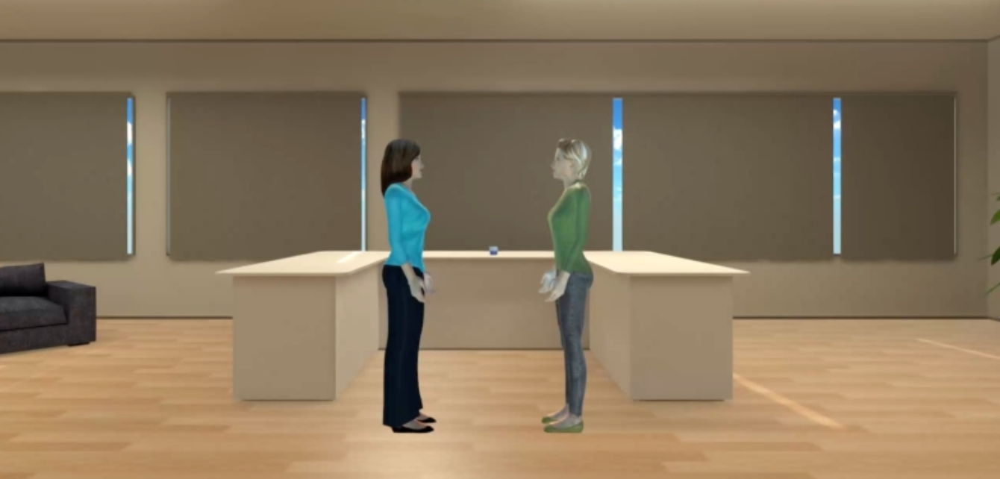

Can a virtual character's attitude change how real people behave? We built a VR experiment to find out.
Imagine this: two people are talking in an office. You need to walk past them to grab something off the table. Do you cut through the space between them, or take the longer way around?
Most people would go around. Walking into someone else's conversation feels rude. But what if those two people are virtual characters? That question drove this research project at KTH.

Does a virtual character's attitude (whether friendly or hostile, dominant or submissive) actually change how real people behave around them? Would someone choose to walk around a virtual agent, or wait when told to, just because of how that agent carries itself?
To test this, we built a virtual office environment using Unity and SteamVR, letting participants physically walk through the scene with a Meta Quest 2 headset. The virtual characters were powered by the Greta platform, which generates facial expressions, gestures, and verbal behavior in real time. Each character's lines were produced through CereProc text-to-speech, and we designed six distinct attitude combinations: from friendly and dominant, to hostile and submissive, to completely silent.
Participants were asked to walk past two virtual characters and pick up a coffee cup from the table behind them. They could either cut straight through the space between the characters, or take the longer path around. We ran the same scenario in two formats: once in VR, and once as a video.
Same people. Same scenario. Completely different behavior.
We expected VR to make people take the characters more seriously; the immersion should have made it feel more real. Instead, the opposite happened. In VR, participants quickly noticed that the characters did not react to them at all. If the characters did not care, why should they? They took the efficient route.
In the video version, participants were asked to imagine what they would do rather than actually do it. That reflective mode pushed them toward the more socially acceptable answer. The gap between "what I actually do" and "what I think I would do" turned out to be much wider than we expected.
We also tried making the characters feel more submissive. Inside the Greta platform, we reworked the scripts to include hesitation, longer apologetic phrasing, and slower pacing, then regenerated the audio through CereProc. We expected participants to notice the difference.
They almost never did. Most people said the characters still felt dominant, regardless of what they said.
This was an unintended constraint of the tooling we chose, and one of the most interesting threads the research left open.
Designing a virtual character's attitude is not just about what it says. When a character fails to respond to the person in front of it, people almost immediately stop treating it as real. Once that happens, social rules stop applying.
If virtual characters are ever going to serve a meaningful role in public spaces, navigation systems, or collaborative tools, making them reactive matters far more than making them sound friendly.